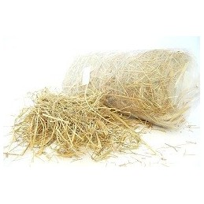

šienas
enacademic.com EN RU DE FR ES Remember this site Dictionary of the Lithuanian Language Interpretations Translations Books
Dictionary of the Lithuanian Language
šienas
šienas: translationšiẽnas sm. (4) 1. sing. SD 1 145(=164), SD 335, PK 154, MP 125, H , R , MŽ , Sut , N , K , L , Rtr , Š , Cs , Dgp , Aps , Lnt , Nmč , Bn , Eiš , Ker pašarui nupjauta ir išdžiovinta žolė: Pluokštas, kuokštas šiẽno J . Visur pripjauta to šiẽno, paimt negalima Ssk . Išgulė žolė – ir po šiẽno Stk . Mano alutis gražus geltonas, nugirdžiau bernelį, šiẽno pjovėją ( d. ) Drsk . Dobilus kaip nupjausma, šiẽną pradėsma pjauti Gd . Šiẽną kirst, sugrėbt ir po kraiku pakavoti [bėgome] K.Donel . Kol sudėjau visą šiẽną, reikėj[o] visam plautis Jon . Va tau: nudavė (smarkiai nulijo) – i po šiẽnu Mžš . Veizėk , kaip šiẽnas išbalna par ilgą laiką Vg . Reik eit šiẽnas vartyt Gdr . Kiba sulis, tai reiks kratyt šiẽnas Mlk . Šiẽną grėbti reikėjo savim iš pelkės Tv . Šiẽną vilko su žieminėms šlajėms Žr . Beveik šiẽnas jau grėbtinas LKT 121( Vdk ). Šiẽną stoguosan sakraudinėja LKK XI171( Zt ). Šiẽną kupetosna dedam Šlčn . Buvo labai lietingi metai – šiẽnas kaugėse supuvo Ėr . Būs lytaus, kraukiat šieną į kupsčius Pln . Čia prie keliui sudėjau šiẽną kupsnõs Ktk . Ar sukukštavai šiẽną? Slnt . Kluonuosna sulenda i šiẽnas, i javai LKT 367( Al ). Reikėdavo šiẽną kraut mokėt: jeigu nemokėsi, tai išgriūs ten pat tas šiẽnas Sk . Skūnė[je] šiẽną kriaudavo į bertainius LKT 124( Trg ). Prieš šventą Joną reikia šiẽnas imt Grl . Tokiam svečiui tai možna ir Jono [i](apie šv. Jono dieną pjauto) šieno duot Sv . Prie šiẽno jau reikia budėt – nepaimsi kada nori Šmn . Avelinis, karvinis šiẽnas Klb III9( Lkm ). Geras šiẽnas, beveik kaip lankõs Mžš . Ot gražus šienẽlis – juoksis karvytė ėsdama Ktk . Pripjaudavo pūkono šiẽno Ktk . Smulkus šiẽnas NdŽ . Stambus šiẽnas NdŽ . Šiẽno šakė NdŽ . Šieno miltai ŽŪŽ 144. Pešu šiẽno karvei šerti Lkv . Paduok po kuželiui šiẽno gyvuliam Klt . Arkliui uždedi glėbį šiẽno, i tuo[j] nėr Jrb . Kitą kartą šiẽnas gana gražus, o gyvolis nenora ėsti, ir gana Rsn . Karvės būt išdvėsę su tokiuo šienù Svn . Šieno apačias užplikom verdančiu vandeniu ir šeriam kiaules Up . Jau pas mañ po šiẽni (baigiau sušerti visą šieną) Dv . Visą šiẽną nūneša į jūrą Sg . Šiẽno prisišienavo kai vilnos (daug ir gero) Klt . Šiẽnas kaip parakas, pardžiūvėjęs Varn . Miško kūdas šiẽnas: greitai išdžiūsta viksvos, lauko žolės riebus šiẽnas Kvr . Padirvių, paskardžių, pakalvių, palankių šienas riebus, o puikus kaip vienas rūta Šts . Tas šiẽnas garuo[ja], y[ra] kaip avių mėšlas LKT 109( Šv ). Stovėjo šiẽnas surūgęs: tai tą tik pasikratau Mlt . Valgo šieną kaip jautis BBJob 40,10. Šienè kadgi rėkia žvynės! Ds . Šienè gūžtelę pasdarius višta i deda Klt . Visi vaikai po kuokštai šiẽną išnešiojo Dglš . Mum i iš rudenio reikia liuobt: ganyklos neturiam, šiẽnas atsako Mžš . [Vėlai nušienautas] šiẽnas šiaudų daikte Strn . Arkliai geležūnim sirgdavo nuo asiūklinio šiẽno Klt . Aš jaunas gulėdavau ant šiẽno, lig kol prasidėdavo šalčiai Sml . Einam šienañ gultų Ds . Vaikam in lopšį šiẽno indeda Stk . Su svogūnais dažydavom [margučius] ir su šiẽno kritesiais, tik reikia alūno Kvr . Aplink apdedam šieniukù uogas, kaip veda – nesusižemija [braškės] PnmŽ . Kalėdose šieną, nuo stalo išnešę, tvarte padalija gyvuliam, kad gyvuliai sektųs LTR ( Slk ). Siuntė muni anytelė žiemužės šieno, vasaros sniego StnD 22. Pagada duoda šienẽlį paimt Stk . Kad mes pernykščiojo turiam šmotą šienùko Jdr . Par girelę jojau, girioj šieną pjoviau, vidury girelės šienelį padžioviau LTR ( Kp ). Vež žalią šienelį, žalias raskileles, vež ir muno dobilelį su žaliu šieneliu D 2. Laimė, kad suvežėm sausą šienẽlį Ktk . Trupuliuką šienẽlio paduodi, trupuliuką šiaudelių – ir prasimaitina karvelė Bgs . Dalgaitę kalt, šienáitį šienaut LKK II222( Lz ). Šienukas N . Šienužis N . Šienužėlis N . Ir ne tep džiūsta lankos šienẽlis, kap josios jaunystėlė DrskD 197. | Šiẽno (žolės) tai priaugo Dg . Visas stovi šiẽnas: niekas nepjauna, niekam nereikia Žl . | prk. : Visokias kūnas – šiẽnas (kaip greit suvystanti žolė) ir visokia garbė jo kaip žiedas lauko DP 463. ^ Išdžiūvus mergelė kai vasaros šiẽnas Pnd . Išbals veidelis per metelius vienus, sudžius ir pati kaip rudenį šienas LTR ( Brž ). Teip jaunos dienos džiūsta kaip šienas Pšl . Aš kaip šienas išdžiūvau Mž 473 . Kad tu išdžiūtum kaip sausiausias šienelis! (toks piktas linkėjimas) LTs V875. Kai vasarą šieno nepjausi, tai žiemą ubagausi Pnd . Sunku šieną vežti, bet lengvu pešti VP 43. Kiek šieno, tiek pieno LTs V373( Srd ). Gerai išejo: šienas beigėsi ir karvė išgaišo ( juok. ) LTR ( Lp ). Avelė bliauna, kol šieno gauna LTR ( Smn ). Tavo karvė – muno šiẽnas Klk . Kaip šuo, atsigulęs ant šienu: nė pats ėda, nė kitam duoda VP 21. Iš šiaudų išėjęs, o šieno nepavijęs B , Sch 111, M . Širdelė – ne avelė, šieno nepaduosi LTR ( Slk ), Lpl . Pilvas – ne avelė, šiẽno nepaduosi An . Aklas gaidys šiẽną pjovė, ką sutiko, tą papjovė (sakoma mosikuojant lazda, norint pagąsdinti) Slnt . Mojuj ark, mojuok, arkliui šieno duok, langus užsikamšyk, kailinius susilopyk, pats ant pečiaus lipk (apie šaltą gegužės mėnesį) LMD ( Sln ). Juozai, Juozai, paduok žąsi šiẽno! – Kad žąsis šiẽno neėda. – Paduok dobilų! ( iron. ) Dkš . Mažutis kumeliukas visą šieną suėdė (peštukas) LTR . Kas trims dantims šieną valgo? – Šakės LTR ( Jrg ). Lydeka begrobė šilą pagriovė, šilas pavyto, pilis pastatė (dalge šienas nupjautas padžiūvo, sugrėbtas ir į kupetas sukrautas) LT I183( Dkš ). Kumelė be grobų visą šalinę šieno suėda (rezginės) Lš . Eina keliu – nedunda, lenda šienu – nečiuža (šešėlis) LTR ( Jrg ). Ožkos akys šienè (šakės) Sch 65( B ). ║ šienapjūtės darbai, šienavimas: Šiandie žmonių bažnyčioj nieko nėr – matai, šiẽnas Slk . Katrie metai ankstyvesni, anksčiau šiẽnas Grž . Naje, py šiẽno reik gero oro Rsn . Pabaigėm šiemet jau šiẽną Lb . Eina šiẽno grėbt – dainuoja, iš šiẽno – dainuoja Stk . Vasara, šiẽno laikas – plikas galėjai vaikščioti Yl . Atejo šiẽno laikas – ans vienas nupjovė viską Trk . Kas tau eis šiẽno laiku į tą bažnyčią Lnk . ^ Ir šienan, ir kieman (visur tais pačiais drabužiais apsivilkęs eina) LTR ( Srv ). Ta pati viena skarelė ir šienan, ir kieman Krok . 2. TŽ III360, LTR ( Smn ) sudžiūvusios žolės atskiras stiebelis, šiaudelis: Vieną šiẽną uždegė, o visas šimtas užsidegė Kv . Šienaĩ visur išlindę – išbirs benešant Grdm . Kad per Kūčias ištrauki ilgą šieną, tai ilgas bus gyvenimas Srv . Ožkele, ožkele, kuom gyveni? – klausia bobutė. – Bėgau per miškelį, nutraukiau liepos lapelį, bėgau per laukelį, nuskyniau vieną šienẽlį – ir tuo gyvenu ( ps. ) Prng . ◊ eĩk šiẽno pjáuti sakoma pasipiktinus kieno elgesiu ar kalba, nebenorint su kuo reikalų turėti: Eĩkit jūs šiẽno pjáut! Prn . eĩti šunìms šiẽno šienáuti niekais virsti: Anas neklauso tatos su moma, tai eĩs šunìm šiẽno šienáut LKK XIII132( Grv ). į (an) šiẽną pavir̃to pasidarė be vertės (apie pinigus): Tie pinigai an šiẽną pavir̃to – ką už juos nupirksi?! Ėr . kaĩp šiẽną gausiai, po daug (vartoti): Kaĩp šiẽną saujoms maunu [vaistus] End . kaĩp (kaĩ Jrb , Grdm ) šiẽno End , Bgt , Mlt , Trgn labai daug ( ppr. apie pinigus): Turiu pinigų kàp šiẽno Mrj . Kiek ana to piningo prisibraukė – kaĩp šiẽno Trk . Tai pinigo bus – kaĩp šiẽno Slm . I turėjo aukso kaĩp šiẽno Pln . kaĩp šiẽną pẽša smarkiai rūko: Rūkyti įprato – kaĩp šiẽną pẽša Mžk . kaĩp šiẽną pjóvęs godžiai (valgo): Išalkęs ir sušalęs valgiau kaip šieną pjovęs J.Bil . nuo šiẽno ant šiaudų̃ prisiver̃sti pakeisti pažiūras: Maždaug tuo metu atsivertė (klaipėdiškis sakytų: prisivertė nuo šieno ant šiaudų) Jonas Vanagaitis I.Simon . šiẽno astmà (kar̃štligė; ŽŪŽ 126, slogà MedŽ 448 ) med. žiedadulkių sukeliama alerginė liga: Nustatytas klininis bronchinės astmos panašumas su šieno astma rš . Šieno karštlige serga žmonės labai jautrūs kurių nors gėlių žiedadulkėms rš . šienù užpjáusi po smer̃čio Krt iron. sakoma abejojant skolos grąžinimu. šiẽną šienáuti šunìms Pls prastai, nedorai gyventi. šiẽno viẽtoje be vertės (apie pinigus): Užėjo vokiečiai, rubliai šieno vietoje, ir aš vėl kaip buvęs ant savo ubagiško keturhektario J.Avyž . víena kója prãšo šiẽno, kità šiaudų̃ apie sunkiai einantį: Nebepaeinu – viena koja prašo šieno, kita – šiaudų Rm .
Dictionary of the Lithuanian Language .
šienapjūvė šienatviaLook at other dictionaries:
šienas — šiẽnas dkt. Šiẽną pjáuti, vartýti, daužýti, grėbti, džiovi̇̀nti … Bendrinės lietuvių kalbos žodyno antraštynas
šienas — statusas Aprobuotas sritis žemės ūkio inžinerinė plėtra ir techninė pažanga apibrėžtis Natūraliai ar aktyviąja ventiliacija iki 17 proc. drėgnio išdžiovinta žolė. atitikmenys: angl. hay vok. Heu, n rus. сено pranc. foin, m šaltinis Lietuvos … Lithuanian dictionary (lietuvių žodynas)
šienas — statusas T sritis ekologija ir aplinkotyra apibrėžtis Vienas pagrindinių atrajojančių gyvūnų pašarų – nupjauta ir išdžiovinta (iki 15–17 % ir mažesnio drėgnio) žolė. Gaminamas iš dobilų, garždenių, liucernų, vikių, eraičinų, motiejukų, svidrių, … Ekologijos terminų aiškinamasis žodynas
Šienas — Sp Šienas Ap Skien L P Norvegija … Pasaulio vietovardžiai. Internetinė duomenų bazė
sienas — sm. (1) NdŽ, KŽ; N, [K] žr. siena 4 … Dictionary of the Lithuanian Language
Geschichte Sienas — Die Wölfin und die Zwillinge, Siena, Museo dell’Opera del Duomo Die Geschichte Sienas beginnt mit den Etruskern, von denen die Stadt wahrscheinlich gegründet wurde (einige Gräber jenes Zeitalters sind außerhalb der Porta Camollia gefunden worden) … Deutsch Wikipedia
Heu — šienas statusas Aprobuotas sritis žemės ūkio inžinerinė plėtra ir techninė pažanga apibrėžtis Natūraliai ar aktyviąja ventiliacija iki 17 proc. drėgnio išdžiovinta žolė. atitikmenys: angl. hay vok. Heu, n rus. сено pranc. foin, m šaltinis … Lithuanian dictionary (lietuvių žodynas)
foin — šienas statusas Aprobuotas sritis žemės ūkio inžinerinė plėtra ir techninė pažanga apibrėžtis Natūraliai ar aktyviąja ventiliacija iki 17 proc. drėgnio išdžiovinta žolė. atitikmenys: angl. hay vok. Heu, n rus. сено pranc. foin, m šaltinis … Lithuanian dictionary (lietuvių žodynas)
hay — šienas statusas Aprobuotas sritis žemės ūkio inžinerinė plėtra ir techninė pažanga apibrėžtis Natūraliai ar aktyviąja ventiliacija iki 17 proc. drėgnio išdžiovinta žolė. atitikmenys: angl. hay vok. Heu, n rus. сено pranc. foin, m šaltinis … Lithuanian dictionary (lietuvių žodynas)
сено — šienas statusas Aprobuotas sritis žemės ūkio inžinerinė plėtra ir techninė pažanga apibrėžtis Natūraliai ar aktyviąja ventiliacija iki 17 proc. drėgnio išdžiovinta žolė. atitikmenys: angl. hay vok. Heu, n rus. сено pranc. foin, m šaltinis … Lithuanian dictionary (lietuvių žodynas)
© Academic, 2000-2020 Mark and share Search through all dictionaries Translate… Search InternetShare the article and excerpts
Direct link
… Do a right-click on the link aboveand select “Copy Link”
We are using cookies for the best presentation of our site. Continuing to use this site, you agree with this. OK